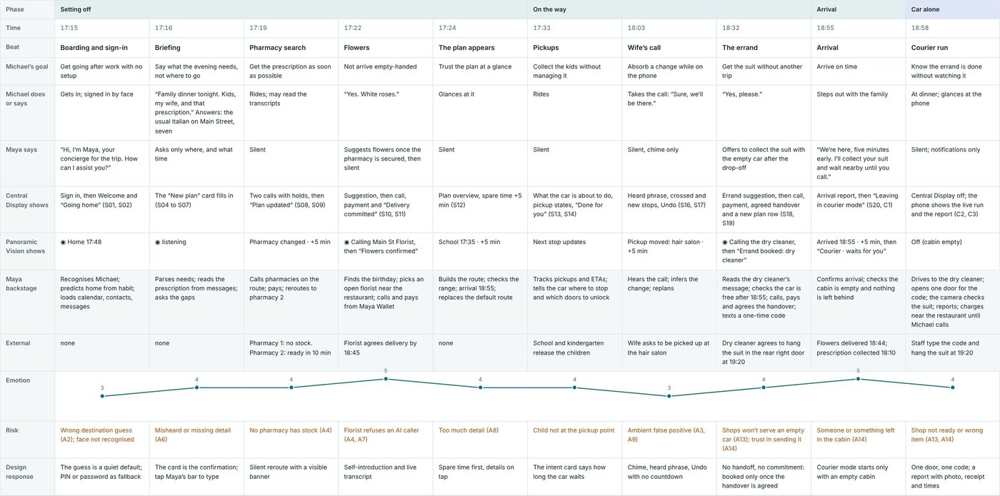
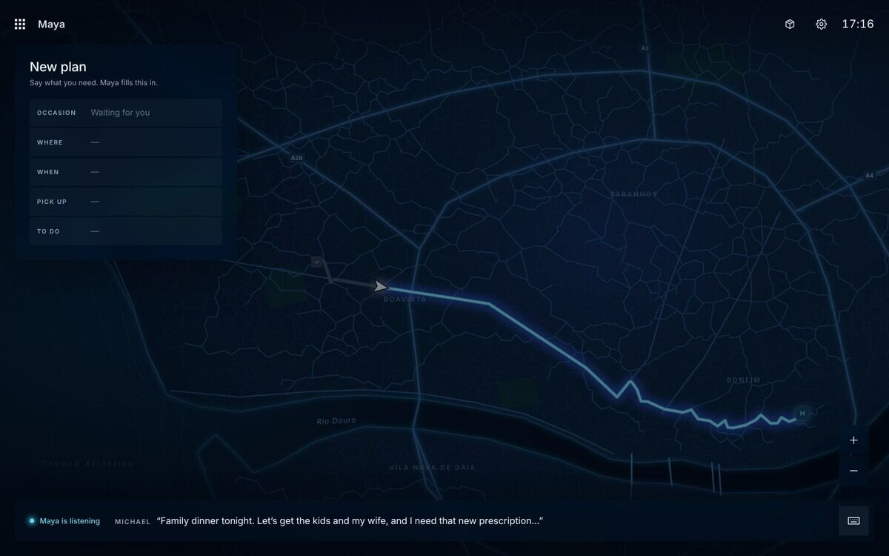
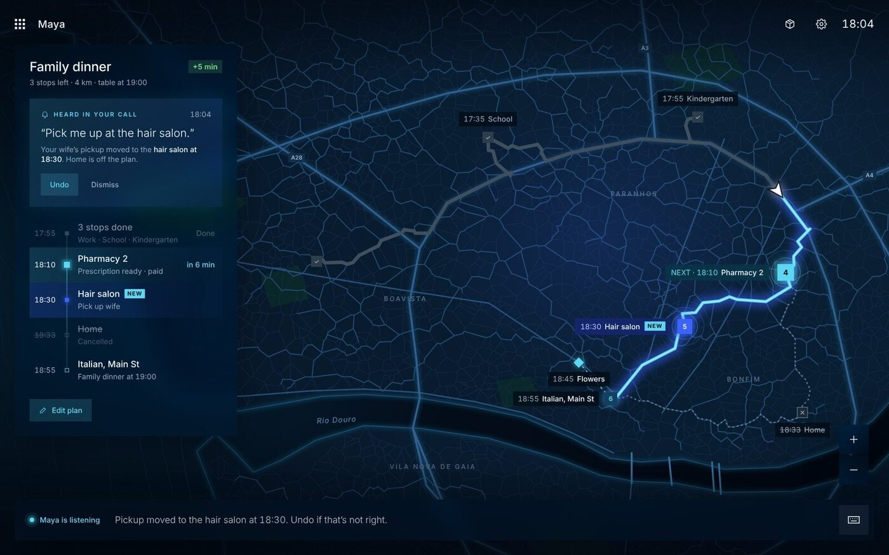
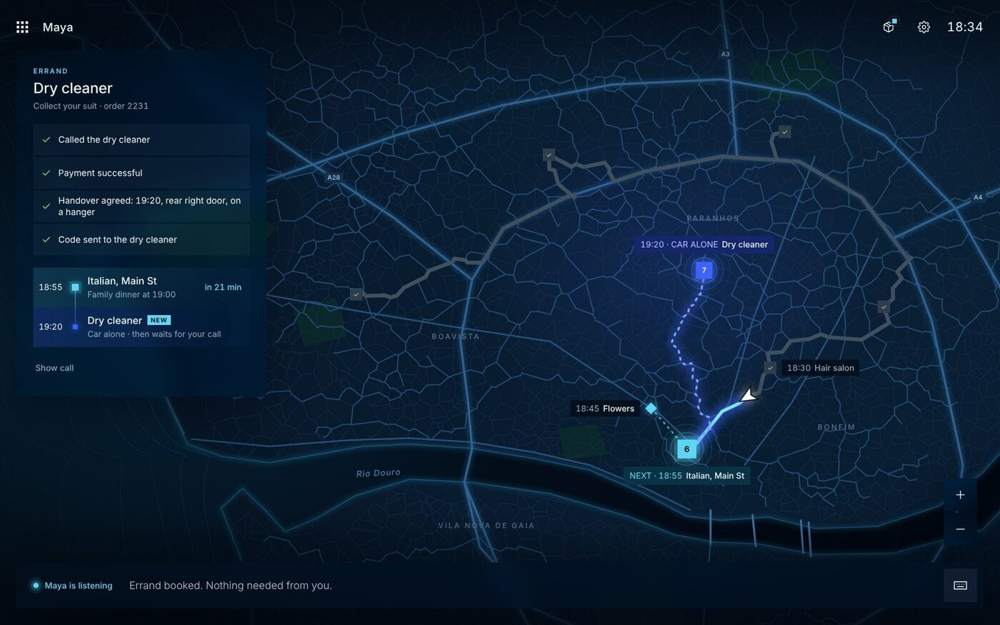
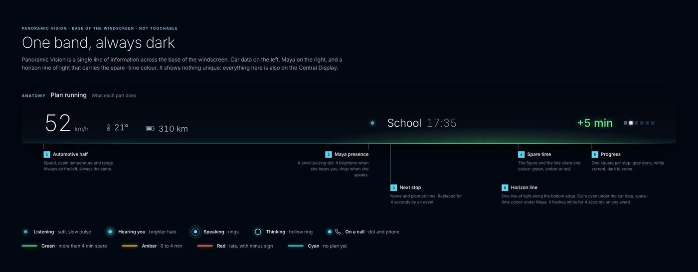

Maya: what should a car do when nobody has to drive?
A concept for an AI concierge in a fully self-driving car. She plans the stops, phones the shops, replans on the way and sends the empty car on errands. An academic, self-initiated project, done solo.
Role
Solo: product framing, research plan, UX, UI and prototype
Team
None. An academic concept, not affiliated with any car maker
Duration
2026
Where it stands
A hypothesis, 16 assumptions ranked by risk, 25 high-fidelity screens and a validation plan. No real-world results yet.
The evening in 25 seconds: Maya's plan on the central display, and the light band at the base of the windscreen following it.
01
Context
A self-driving car frees your hands, not your agenda.
Navigation handles routes, not commitments. A passenger still works out the order of the stops, phones the pharmacy, checks the shop is open, and replans by hand when someone calls with a change.
The concept targets Level 5 autonomy, a large central touchscreen and a passive light band at the base of the windscreen, like the panoramic displays in the newest car interiors.
02
Problem
Once nobody has to drive, an in-car assistant that is a voice menu for the radio is solving the wrong problem. The useful job is taking over the errands around a trip.
Maya is for time-poor people whose evenings are a chain of pickups and errands. In the story that carries the concept, Michael, a father of two, has a family birthday dinner at 19:00, three people to collect and a prescription to fetch.
The hypothesis: time-poor people will hand over trip logistics to an AI that asks only what it can't know, acts on its own, follows the conversation, and makes every action visible and reversible. I'll know it's right when users arrive on time, rarely undo what Maya did, and trust her with more over time.
03
My role and what I owned
Everything. The point of the exercise was to treat a concept the way I would treat a product: a hypothesis, assumptions ranked by risk, and a plan to test them.
A hypothesis and 16 assumptions, ranked by risk.
A hero scenario and conversation design: what Maya says, and mostly what she doesn't.
The journey, a service blueprint and the task flow.
25 high-fidelity screens across the car and the phone, in Figma and code.

Journey map with a service blueprint underneath. Ten beats: Michael's goal, what Maya says, what each screen shows, what happens backstage, the risk and the design response.
04
Key decisions and trade-offs
Decision 1Do first, show clearly, undo easily
Trust comes from visibility, not from approval steps. Maya acts, pays and listens within limits set once. A "Done for you" ledger records every action, and sensitive data stays off the shared screen.
Chosen
Full trust within limits: no approval before calls or payments under the limit.
Rejected
Approval steps before each action. Trust comes from seeing what was done, not from being asked.
Trade-off
No approval before calls or payments under the limit, so Undo has to be easy.

17:16, the briefing. Needs, not addresses; Maya asks two questions.
Decision 2Not every change deserves the same interruption
Changes caused by the world, such as traffic, happen silently and visibly. Changes heard in the cabin conversation get one chime, the phrase that was heard, and Undo.
Chosen
Overheard intent acts on high confidence and asks on medium.
Rejected
Reading the plan back aloud. Talking costs attention in a family cabin; the screen confirms instead.
Trade-off
The risk of acting on talk that wasn't meant for her. This is the assumption the whole concept depends on.

18:03, a call. One chime, the phrase heard, Undo.
Decision 3Send the empty car only when the handover is agreed
An empty self-driving car is idle capacity. After the family is dropped off, Maya offers to collect the dry cleaning. She phones the shop to pay and agree the handover, and books the errand only then.
Chosen
Courier errands only with an agreed time, person and handover. The car opens one door with a one-time code.
Rejected
Booking any errand and hoping the shop cooperates. Errands would fail at the door.
Trade-off
Fewer errands qualify.

18:32, the errand. Booked only after the handover is agreed.
Decision 4One evening, one user, Level 5 only
Scope is where a concept usually fails: it tries to show everything. I kept one story and wrote down what was left out.
Chosen
One evening, one user and full autonomy, designed in depth, with voice and touch as equals.
Rejected for now
Other errand types, guest mode, conflicts between passengers and a regulation review for empty cars. They went on an explicit "if I had a month" list.
Trade-off
Voice and touch as equals means every task is designed twice.

Glance, don't read: car data on the left, Maya on the right, and a line of light in the spare-time colour.
05
Where it stands
Ready to test, riskiest assumption first. There are no real-world results, so there are no outcome numbers here; there are targets.
Assumption
Test
Target
Listening to cabin talk is welcome, and false positives are cheap
Scripted audio with real changes and decoys
Undo under 10%
People will send their empty car, and accept a cabin camera
Clickable courier flow with 5 people
4 of 5 would send it
Shops cooperate with an AI caller and an empty car
Scripted calls to local shops
90%+ of errands done
Spare time and the light band work at a glance
5-second glance test
80%+ correct
06
What I'd do next
Run the riskiest test before any more high-fidelity work.
Everything depends on whether families welcome a car that listens. Five sessions with scripted audio would answer that, and I would now run them before drawing the screens, not after.
Test overheard intent first, then the empty-car errand.
Then widen the scope from the "if I had a month" list, in order of risk.
Let's talk about your product.
I'm based in Porto and work remotely, hybrid or on site.